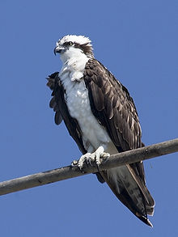
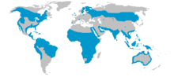
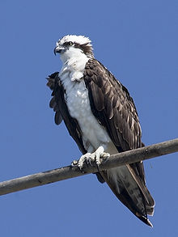
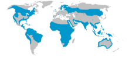

| Osprey | |
|---|---|
|  | |
| North American subspecies | |
| Conservation status | |
| Binomial name | |
| Pandion haliaetus (Linnaeus, 1758) |
|
|  |
| Osprey | |
|---|---|
|  | |
| North American subspecies | |
| Conservation status | |
| Binomial name | |
| Pandion haliaetus (Linnaeus, 1758) |
|
|  |
The Osprey (Pandion haliaetus), sometimes known as the sea hawk or fish eagle, is a diurnal, fish-eating bird of prey. It is a large raptor, reaching 60 centimetres (24 in) in length with a 2 m wingspan. It is brown on the upperparts and predominantly greyish on the head and underparts, with a black eye patch and wings.
The Osprey tolerates a wide variety of habitats, nesting in any location near a body of water providing an adequate food supply. It is found on all continents except Antarctica although in South America it occurs only as a non-breeding migrant.
As its other common name suggests, the Osprey's diet consists almost exclusively of fish. It has evolved specialised physical characteristics and exhibits unique behaviour to assist in hunting and catching prey. As a result of these unique characteristics, it has been given its own taxonomic genus, Pandion and family, Pandionidae. Four subspecies are usually recognised. Despite its propensity to nest near water, the Osprey is not a sea-eagle.

{kind=link}
{kind=link}